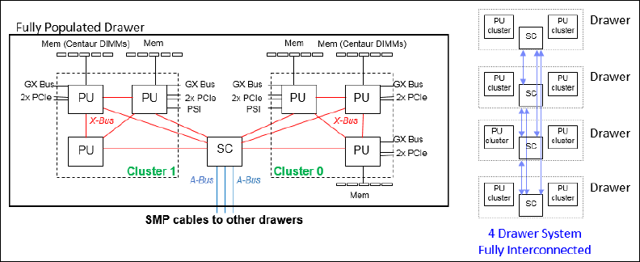

2 IBM z14 Technical Introduction
1.1 The z14: A secure platform integrated and open by design
The z14 introduces a paradigm shift for protecting data and transactions, from selective
encryption to pervasive encryption.
1
It includes higher-performance processors and
co-processors, increased cache density, up to 32 TB of memory, enhanced access to data,
improved virtualization for running Linux on z Systems, and enhancements for Java and other
compilers.
The z14 offers a fast, scalable, and securable enterprise system. Compared to its
predecessor platforms, the z14 provides more of what you need to satisfy today’s growing IT
demands:
� Compute power for increased throughput
� Large-scale memory to process data faster
� Industry-unique cache design to optimize performance
� Accelerated I/O bandwidth to process massive amounts of data
� Data compression to economically store and process information
� High-speed cryptographic operations to help secure transactions and data
From the hundreds of microprocessors to the software stack, the z14 is built to quickly
respond to change. This evolution of the Z platform embodies a proven infrastructure
designed from the ground up for data and transactions. Figure 1-1 shows the z14.
Figure 1-1 The IBM z14
The new Z platform incorporates the ability to access larger data in memory, and has
industry-exclusive I/O processors for offloading data-intensive workloads.
1
Pervasive encryption is a data-centric approach to information security that entails protecting data entering and
exiting the z14 platform through widespread encryption. See “Pervasive encryption” on page 82 for more
information.

Chapter 1. The base of a trust economy 3
The z14 meets the needs of the trust economy and digital era using these techniques:
� Securing data with pervasive encryption
� Transforming a transactional platform into a data powerhouse
� Getting more out of the platform with IT Operational Analytics
� Providing resilience with key to zero downtime
� Accelerating digital transformation with agile service delivery
� Revolutionizing business processes
� Blending open source and Z technologies
1.1.1 Securing data with pervasive encryption
The z14 excels with security features that are built into the hardware, firmware, and operating
systems. The built-in features range from storage protection keys and workload isolation to
granular audit capabilities, and more. The Central Processor Assist for Cryptographic
Function (CPACF), standard on every core, supports pervasive encryption and provides
hardware acceleration for encryption operations. In addition, the new Crypto Express6S gets
a performance boost on z14. Combined, these two enhancements perform encryption more
efficiently on the z14 than on earlier Z platforms.
IBM Z pervasive encryption provides the comprehensive data protection that your
organization and customers demand. By placing the security controls on the data itself, the
solution creates an envelope of protection around the data on Z. For example, Z pervasive
encryption helps protect the at-rest and in-flight data that is on your Z infrastructure. Also,
centralized, policy-based data encryption controls significantly reduce the costs that are
associated with data security and regulatory compliance, including the new General Data
Protection Regulations (GDPR).
2
IBM Z pervasive encryption implements this comprehensive security with your ongoing
operations in mind. Therefore, it does not require you to make any application changes, and
can be implemented by using policy-based controls with low overhead. These capabilities can
slash the costs associated with data security and compliance.
1.1.2 Transforming a transactional platform into a data powerhouse
Currently, data is one of the most valuable resources an organization possesses. Deriving
insights from that data to drive optimal business decisions becomes one of the biggest
challenges. To maximize the value of that resource, your enterprise might need to integrate
additional external data sources to extract hidden insights.
For decades, clients typically copied business-critical data from their mainframe transactional
systems to other platforms, or even data lakes, to perform sophisticated analytics. This
process was inefficient, expensive, time-consuming, and introduced both risk on
lower-security platforms and data latency.
By accessing your enterprise data in-place with minimal data duplication or movement, you
can minimize the cost and complexity of analytics. You can also make enterprise data highly
accessible to analytics applications and tools by integrating transactional and analytics
processing, and protect sensitive data by keeping it within the secure Z platform.
2
For more information about GDPR, see the Clear the Path to the GPDR website.
4 IBM z14 Technical Introduction
Because of the advanced infrastructure, with double the cache density on each chip and up to
32 TB memory, the z14 can support state-of-the-art cognitive solutions:
� Apache Spark: An open source, in-place analytics solution for z/OS that simplifies big data
analysis. Apache Spark gives developers and data scientists the ability to analyze
business-critical z/OS data in place, with no data movement. Apache Spark on z/OS can
also provide a federated view by accessing and analyzing distributed and local data.
� IBM Machine Learning for z/OS: A comprehensive solution that manages the entire
machine learning workflow, beginning with quick ingestion and transformation of Z data
where it resides. The solution then securely creates, deploys, and manages high quality
self-learning behavior models to help you extract hidden insights that more accurately
anticipate organizational needs.
� The IBM DB2® Analytics Accelerator for z/OS: A high-performance appliance that
transforms your mainframe into a highly efficient transactional and analytics-processing
environment. It supports the full lifecycle of a real-time analytics solution on a single
system that integrates transactional data, historical data, and predictive analytics.
1.1.3 Getting more out of the platform with IT Operational Analytics
Today, demands for 24 x 7 high-performance operations continue to rise. At the same time,
allowed service windows shrink and are much less frequent. Increasing system complexity
makes planning, maintaining, and troubleshooting more difficult and time consuming. IT
operations analytics represent a possible solution to this challenge.
The z14 provides the infrastructure to host real-time analytics tools so you can clearly see
your operating environment, then maximize operational efficiencies to help reduce costs.
IBM designed IBM Operations Analytics for z (IOAz), IBM Common Data Provider for z, and
IBM z Operational Insights to ensure that your Z operates at peak performance. To get the
most out of your system, Operations Analytics for z provides deep insights based on IBM’s
industry-leading expertise into your Z operational data.
1.1.4 Providing resilience with key to zero downtime
Every second of downtime (planned or unplanned) can mean lost revenue. It is crucial to
keep critical systems running 24 x 7, and to rapidly recover from an outage and resume
critical business operations.
The
Z in IBM Z stands for zero downtime, and the z14 has the same proven reliability that all
IBM Z platforms are known for. Like previous generations, the z14 provides technology and
services to help identify and remove single points of failures (SPOFs) in critical components.
Also, with platform-level redundancy, the z14 is designed to handle failures while maintaining
user access. Components can be repaired, maintenance performed, and products migrated
with minimal business impacts. Some capabilities, such as capacity-on-demand,
automatically turn components on and off based on current needs.
Although the z14 platform is highly robust and even more so in a sysplex
3
environment,
implementing the IBM Geographically Dispersed Parallel Sysplex™ (IBM GDPS®) family of
Note: IBM z Advanced Workload Analysis Reporter (IBM zAware), which used to be
delivered as a firmware appliance running on a dedicated LPAR, is now part of IOAz.
3
Sysplex is a system clustering technique for high availability, see “High availability with Parallel Sysplex” on page 79
for details.
Chapter 1. The base of a trust economy 5
solutions improves resilience in cases of unplanned failures, power outages, fire, or human
error. The GDPS family of solutions provides additional tools to ensure Z availability, and
mask or significantly reduce the effects of critical component outages or failures.
Using IBM HyperSwap® technology, I/O traffic can be seamlessly routed from disk
subsystems that cannot service the I/O request to a second disk subsystem that can.
Additionally, the GDPS/Active-Active solution can route workload from a server location that is
experiencing problems to a second location that is operating well.
1.1.5 Accelerating digital transformation with agile service delivery
An effective DevOps solution breaks down existing development silos, unifies infrastructure
platforms, and enables ongoing deliveries. z14 provides the scalable and secure
infrastructure for enterprises that must rapidly create and deliver critical applications, while
meeting agreed-on levels for quality, availability, regulatory compliance, and end-use
expectations.
IBM DevOps for Z solutions operate from application understanding through deployment and
management. In addition, DevOps for Z solutions gives you a single, cost-effective toolset to
maintain and modernize valuable applications on both Z and distributed platforms.
For instance, Application Discovery and Delivery Intelligence helps development teams
understand application interdependencies, complexity, and quality across platforms,
environments, and languages. This ability gives your teams an edge in identifying potential
API candidates, and provides insight about maintainability and complexity. As a result, the
candidate API quality rises, and the user experience improves as well.
In addition, the z14 provides the infrastructure to support the mission-critical workloads of
cloud services. The new high-performance processors, large memory, and enhanced access
to data enable the z14 to integrate business transactions, operational data, and analytics into
a single workflow.
The IBM z14 is designed as a strategic asset to power the API economy.
4
Using the API
economy demands fortified clouds, which can be open, private, public, and hybrid. The z14
gives you the hardware platform necessary to support those clouds.
For Linux assets, Z platforms are optimized for open source software, enhanced scalability,
and sharing, while focusing on business continuity to support cloud. For traditional
z/OS-based assets, Z offerings provide intuitive tools to help developers speed
Representational State Transfer (RESTful) API development.
No matter which asset class you choose, the z14 allows mobile and cloud application
developers to incorporate z/OS business-critical data and transactions into their applications
without needing to understand z/OS subsystems.
4
For more information about the API economy, see the Reach new customers with the API economy website.
6 IBM z14 Technical Introduction
1.1.6 Revolutionizing business processes
Blockchain is poised to revolutionize how industries do business. It is a technology for a new
generation of transactional applications that establishes trust, accountability, and
transparency while streamlining business processes.
In a blockchain network, members have access to a distributed, shared ledger that is
cryptographically secure, updated by consensus, and becomes an immutable, indelible
record of all
transactions. The ledger functions as a single source of “truth”. Considering that
blockchain is all about increasing trust in
business transactions, it makes perfect sense to run
blockchain for business on Z.
Depending on your business or regulatory policies, you can choose on-premises installation
supported by IBM-certified Docker images running on Linux on z Systems, or the IBM
Blockchain on Bluemix® High Security Business Network (HSBN) service plan. HSBN is a
fully managed blockchain service running in the IBM cloud. It delivers a secure, isolated
compute environment that is ideally suited for workloads with sensitive data.
1.1.7 Blending open source and Z technologies
The right blend and balance of open source technologies, ISV tools, and IT platform is key to
enable businesses and organizations to deliver change at a much quicker pace. To this end,
IBM has created an ecosystem of clients, business partners, and ISVs who are engaging in
an open source development community to bring the most important and most sought-after
foundational open source technologies to its IT platforms. In addition, IBM is a member of
many open-standard organizations and software governance consortia that help to shape the
future of open source software.
The combination of a robust and securable hardware platform with the power of a Linux
distribution can optimize the building, testing, and deploying of modern applications, and can
accommodate scale-out clusters and scalable clouds.
The z14 provides a secure, massive capacity Linux platform that can be deployed as
stand-alone, or side-by-side with z/OS or IBM z/VSE® environments on a single physical
platform. Therefore, you can easily integrate Linux workloads on the z14 with z/OS and z/VSE
solutions that will benefit from data and applications being tightly collocated with fast internal
communication and improved availability.
Linux on z Systems on the z14 uses pervasive encryption, which is a transparent protection
envelope that secures data within the system. It gives you the performance and vertical scale
that you need to meet the demands of your digital enterprise while controlling server sprawl
costs. Combined with the integration benefits, Linux on z Systems on the z14 allows you to
deploy innovative new services or cognitive analytics and consolidate x86 workloads.
In addition, deploying Linux on the z14 can benefit your bottom line. Compared to virtualized
x86 alternatives and public cloud solutions, the lower costs for administration and
management, software licensing, business continuity, and floor space can reduce your total
cost of ownership.
Chapter 1. The base of a trust economy 7
1.2 z14 technical description
The IBM z14, when compared to its predecessor (IBM z13®), offers several improvements,
such as faster, more efficient, and redesigned high-frequency chips, additional granularity
options, better availability, faster encryption, and enhanced on-demand options.
1.2.1 Technical highlights
The z14 is a highly scalable symmetric multiprocessor (SMP) system, and the architecture
ensures continuity and upgradeability from the previous z13 and zEC12. Five z14 models are
offered: M01, M02, M03, M04, and M05.
Table 1-1 shows the main technical enhancements in the z14 over its predecessor platforms.
Table 1-1 Technical highlights in the z14
You can compare the z14 to the previous two IBM Z generations using the Compare IBM z
Systems tool.
Greater total system capacity and more subcapacity settings
for central processors (CP). The IBM z/Architecture® ensures
continuity and upgradeability from previous models.
Up to 170 characterizable
processor units. Up to 33 CPs can
have subcapacity settings.
Multi-core, single-chip modules running to help improve the
execution of processor-intensive workloads.
5.2 GHz (14 nm FINFET
Silicon-On-Insulator (SOI))
More real memory per system, ensuring high availability in the
memory subsystem through use of proven redundant array of
independent memory (RAIM) technology.
Up to 32 TB of addressable real
memory per system.
A large fixed hardware system area (HSA) that is managed
separately from client-purchased memory.
192 GB.
Proven technology (fifth-generation high frequency and third-generation out-of-order design) with a
single-instruction, multiple-data (SIMD) processor that increases parallelism to accelerate analytics
processing. In addition, simultaneous multithreading (SMT) increases processing efficiency and
throughput and raises the number of instructions in flight.
Processor cache structure improvements and larger cache sizes to help with more of today’s
demanding production workloads. The z14 offers these levels of cache:
� First-level cache (L1 private): 128 KB for instructions, 128 KB for data
� Second-level cache (L2): 2 MB for instructions and 4 MB for data
� Third-level cache (L3): 128 MB
� Fourth-level cache (L4): 672 MB
Improved cryptographic functions and performance, achieved by having one dedicated cryptographic
co-processor per processor unit.
IBM zHyperLink Express is a new, short distance, Z I/O adapter designed for up to 5x lower latency
than High Performance FICON for read requests.
The channel subsystem is built for I/O resilience. The number
of logical channel subsystems (LCSS), subchannel sets, and
I/O devices are consistent with its predecessor platform, as is
the number of logical partitions (LPARs).
� Six LCSS
� 85 LPARs
� Four subchannel sets
� 32,000 I/O devices per channel

8 IBM z14 Technical Introduction
To ensure a balanced and highly available system, the z14 includes these additional features
and functions:
� Enhanced LPAR resource allocation algorithms for processor units and memory (16 TB
per LPAR)
� IBM Virtual Flash Memory (VFM) can be used to handle paging workload spikes and can
improve availability. VFM is the replacement for the Flash Express features (0402 and
0403), which were available on the zEC12 and z13.
� Next generation Crypto Express6S feature supports up to 85 domains
� New CMPSC with Huffman Coding compression for faster expansion algorithms and
reduced overhead
� Guarded Storage Facility for improved Java performance by reducing program pauses
during Java Garbage Collection
� Functionality in 10 GbE RoCE Express2, with the increased ability to share adapters
between LPARs
� Coupling Express Long Reach (LR) for coupling links that need to extend up to 10 km
� Next generation FICON Express16S+
� zHyperLink Express with IBM DS8880 for extremely low latency
� OSA-Express6S provides support for Inbound Workload Queuing, allowing separate
inbound IPSec packets
� Secure Service Container
5
to build and host secure virtual appliances
� Air cooled systems such as cooling radiators with N+1 redundant design
� Support for ASHRAE Class A3 data centers
Figure 1-2 on page 9 compares the z14 with previous Z platforms in the following key areas:
� Single-engine (1-Way) PCI
6
� Number of processor units
� Memory
� System I/O bandwidth
5
See “Secure Service Container” on page 71 for more information.
6
Based on the processor capacity index (PCI). PCI values can be obtained from Large Systems Performance
Reference, SC28-1187.
Chapter 1. The base of a trust economy 9
Figure 1-2 Balanced system design: z14 versus its predecessors
You can find more details about the z14 in Chapter 2, “IBM z14 hardware overview” on
page 17. For an in-depth description of IBM z14 functions and features, see also IBM z14
Technical Guide, SG24-8451.
1.2.2 Storage connectivity
Storage connectivity is provided on the z14 by IBM Fibre Connection (FICON) and the
IBM zHyperLink Express feature.
FICON
FICON features follow the established Fibre Channel (FC) standards to support data storage
and access requirements, along with the latest FC technology in storage and access devices.
FICON Express features support these protocols:
� Native FICON
This enhanced protocol (over FC) provides for communication across channels,
channel-to-channel (CTC) connectivity, and with FICON devices, such as disks, tapes,
and printers. It is used in z/OS, IBM z/VM®, IBM z/VSE, z/TPF, and Linux on z Systems
environments.
� Fibre Channel Protocol (FCP)
This is a standard protocol for communicating with disk and tape devices through Fibre
Channel switches and directors. The FCP channel can connect to FCP SAN fabrics and
access FCP/SCSI devices. FCP is used by z/VM, KVM for IBM Z, z/VSE, and Linux on z
Systems environments.
FICON Express16S+ features provide significant improvements in throughput and response
time for performance-critical middleware, and to shrink the batch window that is required to
accommodate I/O-bound batch work. FICON Express16S+ features are implemented using
10 IBM z14 Technical Introduction
PCIe cards, and offer better port granularity and improved capabilities over the previous
FICON Express features. FICON Express16S+ features support a link data rate of 16 Gbps
(4, 8, or 16 Gbps auto-negotiate), and is the preferred technology for new systems.
For more information about the available FICON Express features, see 3.1, “I/O features at a
glance” on page 34.
zHyperLink Express
zHyperLink was created to provide fast access to data via extremely low latency connections
between the Z platform and storage.
The zHyperLink Express feature allows you to make synchronous requests for data that is in
the storage cache of the IBM DS8880. This process is done by directly connecting the
zHyperLink Express port in the z14 to an I/O Bay port of the DS8880. This short distance (up
to 150 m), direct connection is currently intended to speed up DB2 for z/OS
blocking read
requests.
Working in conjunction with the FICON SAN Infrastructure, zHyperLink can improve
application response time, cutting I/O-sensitive workload response time by up to 50% without
requiring application changes.
Note that zHyperLink channels complement FICON channels, but they do
not replace them.
1.2.3 Network connectivity
The z14 is a fully virtualized platform that can support many system images at once.
Therefore, network connectivity covers not only the connections between the platform and
external networks with Open Systems Adapter-Express (OSA-Express) and 10 GbE RoCE
Express features, but also supports specialized internal connections for intra-system
communication through IBM HiperSockets™ and Shared Memory Communications–Direct
Memory Access (SMC-D).
OSA-Express
The OSA-Express features provide local area network (LAN) connectivity and comply with
IEEE standards. In addition, OSA-Express features assume several functions of the TCP/IP
stack that normally are performed by the processor unit, allowing significant performance
benefits by offloading processing from the operating system.
OSA-Express6S features introduced with the z14 is a technology refresh. They continue to
support 1000BASE-T Ethernet for copper environments as well as 10 Gigabit Ethernet and
Gigabit Ethernet fiber optic (single-mode and multimode) environments.
HiperSockets
IBM HiperSockets is an integrated function of the Z platforms that supplies attachments to up
to 32 high-speed virtual local area networks with minimal system and network overhead.
HiperSockets is a function of the Licensed Internal Code (LIC). It provides LAN connectivity
across multiple system images on the same Z platform by performing memory-to-memory
data transfers in a secure way. The HiperSockets function eliminates the use of I/O
subsystem operations and having to traverse an external network connection to communicate
between logical partitions in the same Z platform. In this way, HiperSockets can help with
server consolidation by connecting virtual servers and simplifying the enterprise network.
Chapter 1. The base of a trust economy 11
10GbE RoCE Express2
The 10 Gigabit Ethernet (10GbE) RoCE Express2 features uses Remote Direct Memory
Access (RDMA) over Converged Ethernet (RoCE) to provide fast memory-to-memory
communications between two Z platforms or within a Z platform.
The feature is designed to help reduce consumption of CPU resources for applications that
use the TCP/IP stack (such as IBM WebSphere® accessing an IBM DB2 database). It can
also help reduce network latency with memory-to-memory transfers by using Shared Memory
Communications over RDMA (SMC-R) in z/OS V2R1 or later.
With SMC-R, you can transfer huge amounts of data quickly, at low latency. SMC-R is
completely transparent to the application, requiring no code changes and thus enabling rapid
time to value.
SMC-D
The z14 also uses a recently introduced communications protocol called Shared Memory
Communications
- Direct Memory Access (SMC-D). SMC-D is similar to SMC-R, but is
intended for communications
within the same Z platform, optimizing operating systems
communications in a way that is transparent to socket applications. It reduces the CPU cost of
TCP/IP processing in the data path, enabling highly efficient and application-transparent
communications. Notably, SMC-D requires no additional physical resources (such as RoCE
adapters, PCI bandwidth, ports, I/O slots, network resources, or 10GbE switches). Instead,
SMC-D uses either HiperSockets or an OSA-Express feature for establishing the initial
connection.
For more information about the available network connectivity features, see 3.1, “I/O features
at a glance” on page 34.
1.2.4 Cryptography
z14 provides two major groups of cryptographic functions: CPACF and Crypto Express6S.
CPACF is a high performance, low latency co-processor that performs symmetric key
encryption and calculates message digests (hashes) in hardware. Supported algorithms are
AES, DES/TDES, SHA-1, SHA-2, and SHA-3. Latency in the CPACF in the z14 is significantly
less compared to the CPACF in the z13.
The tamper-sensing and tamper-responding Crypto Express6S features provide acceleration
for high-performance cryptographic operations and support up to 85 domains. This
specialized hardware performs AES, DES/TDES, RSA, Elliptic Curve (ECC), SHA-1, and
SHA-2, and other cryptographic operations. It supports specialized high-level cryptographic
APIs and functions, including those required in the banking industry. Crypto Express6S
features are designed to meet the FIPS 140-2 Level 4 and PCI HSM security requirements for
hardware security modules.
The z14 offers twice the AES performance as the z13, a True Random Number Generator,
SHA3 support, and RSA/ECC acceleration.
1.2.5 Clustering connectivity
A Parallel Sysplex is an IBM Z clustering technology used to make applications running on
logical and physical servers highly reliable and always available. The servers in a Parallel
Sysplex are interconnected via coupling links.

12 IBM z14 Technical Introduction
Coupling connectivity for Parallel Sysplex on z14 use Coupling Express Long Reach (CE LR)
Integrated Coupling Adapter Short Reach (ICA SR) and InfiniBand (IFB) technology. The
ICA SR and HCA3-O SR are designed to support distances up to 150 m. The CE LR and
HCA3-O LR fanouts supports longer unrepeated distances of up to 10 km between systems.
1.2.6 Special-purpose features and functions
When it comes to Z development, IBM takes a total systems view. The Z stack is built around
digital services, agile application development, connectivity, and systems management. This
configuration creates an integrated, diverse platform with specialized hardware and dedicated
computing capabilities.
The z14 delivers a range of features and functions, allowing processor units to concentrate on
computational tasks, while distinct, specialized features take care of the rest. The following
are some of the special-purpose features and functions that are offered with the z14:
� Data compression
– The Compression Coprocessor (CMPSC) is a high-performance coprocessor that uses
compression algorithms (such as new Huffman encoding) to help reduce disk space
and memory usage.
– The IBM zEnterprise® Data Compression (zEDC) Express feature delivers an
integrated solution to help reduce CPU consumption, optimize performance of
compression-related tasks, and enable more efficient use of storage resources.
� Secure Services Container
This is a special-purpose firmware partition that is isolated from production and enables
the secure deployment of software appliances.
� GDPS Virtual Appliance
The GDPS Virtual Appliance is a fully integrated, continuous availability, and disaster
recovery solution for Linux on z Systems that can help improve availability and
time-to-value.
� Dynamic Partition Manager (DPM)
DPM is a guided management interface that is used to define the Z hardware and virtual
infrastructure, including integrated dynamic I/O management that runs Linux on z Systems
environments.
� Guarded Storage Facility (GSF)
Also known as pause-less garbage collection, Guarded Storage Facility is a new
architecture introduced with z14 to enable enterprise scale Java applications to run
without periodic pause for garbage collection on larger heaps.
� Instruction Execution Protection Facility (IEPF)
Instruction Execution Protection is a new hardware function introduced with z14 that
enables software like IBM Language Environment® to mark certain memory regions (for
example, a heap or stack) as non-executable to improve the security of programs running
on Z against stack-overflow or similar attacks.
� Simultaneous multithreading (SMT)
With SMT, you can process up to two simultaneous threads in a single core to optimize
throughput. An operating system with SMT support can be configured to dispatch work to
a thread on a zIIP
7
or an IFL
8
. New with z14, SAP engines also support SMT.
7
IBM z Integrated Information Processor (zIIP) is used under z/OS for designated workloads, which include IBM
Java virtual machine (JVM), various XML System Services, and others.

Chapter 1. The base of a trust economy 13
� Single-instruction, multiple-data (SIMD)
SIMD is set of instructions that allows optimization of code to complex mathematical
models and business analytics vector processing. The set of SIMD instructions are a type
of data-parallel computing and vector processing that can decrease the amount of code
and accelerate mathematical computations with integer, string, character, and floating
point data types.
� Dynamic memory relocation
This is in support of Enhanced Drawer Availability (EDA) and Concurrent Drawer
Replacement (CDR). With this technology, an algorithm is used to dynamically move
memory between CPC drawers to improve performance without impacting the operating
system.
� Coupling and parallel sysplex
Data sharing and serialization functions are offloaded to the coupling facility via a special
coupling link network, providing the infrastructure to run a single production workload
accessing a common set of data across many z/OS system images.
You can read more about these and other z14 features in Chapter 3, “Supported features and
functions” on page 33 and Chapter 4, “Strengths of the z14 platform” on page 59.
1.2.7 Capacity on demand and performance
The z14 enables just-in-time deployment of processor resources. The capacity on demand
(CoD) function allows users to dynamically change available system capacity. This function
helps companies respond to new business requirements with flexibility and precise
granularity.
Also contributing to the additional capacity on the z14 are numerous improvements in
processor chip design, including new instructions, multithreading, and redesigned and larger
caches.
In the same footprint, the z14 can deliver up to 25%
9
more capacity than the largest 141-way
z13. The z14 1-way system has approximately 10% more capacity than the z13 1-way
system.
For more details see 4.3.2, “Capacity on demand” on page 73 and 4.3.3, “z14 performance”
on page 75.
1.2.8 Reliability, availability, and serviceability
The z14 offers the same high quality of service and reliability, availability, and serviceability
(RAS) that is traditional in Z platforms. The RAS strategy employs a building-block approach
that is designed to meet stringent client requirements for achieving continuous, reliable
operation. These are the RAS building blocks:
� Error prevention
� Error detection
� Recovery
� Problem determination
� Service structure
� Change management
8
An Integrated Facility for Linux (IFL) is exclusively used with Linux on z Systems and for running the z/VM or KVM
hypervisor in support of Linux.
9
Variations on all the observed increased performance depend on the workload type.
14 IBM z14 Technical Introduction
� Measurement
� Analysis
The RAS design objective is to manage change by learning from previous product releases
and investing in new RAS functionality to eliminate or minimize all sources of outages.
For more information on RAS, see 4.4, “Reliability, availability, and serviceability” on page 77.
1.3 Software support
The z14 supports a wide range of IBM and independent software vendor (ISV) software
solutions. This range includes traditional batch and online transaction processing (OLTP)
environments, such as IBM Customer Information Control System (IBM CICS®), IBM
Information Management System (IBM IMS™), and IBM DB2. It also includes these web
services (in addition to others that are not listed):
� Java platform
� Linux and open standards applications
� WebSphere
� IBM MobileFirst™ Platform Foundation for mobile application development
� IBM z/OS Connect Enterprise Edition
The following operating systems are supported on the z14:
� z/OS Version 2 Release 3
� z/OS Version 2 Release 2 with PTFs (exploitation)
� z/OS Version 2 Release 1 with PTFs (exploitation)
� z/OS Version 1 Release 13 with PTFs (limited exploitation, requires extended support)
� z/VM Version 6 Release 4 with PTFs (compatibility and exploitation support)
� z/VM Version 6 Release 3 with PTFs (compatibility and exploitation support)
� z/VSE Version 6 Release 2 with PTFs
� z/VSE Version 6 Release 1 with PTFs
� z/VSE Version 5 Release 2 with PTFs
� z/TPF Version 1 Release 1 (compatibility support)
� Linux on z Systems:
– SUSE: SUSE Linux Enterprise Server 11 and 12
– Red Hat: Red Hat Enterprise Linux (RHEL) 6, and RHEL7
– Ubuntu: 16.04 LTS
� KVM for IBM z 1.1.2 with FixPack (toleration mode)
� KVM hypervisor, which is offered with the following Linux distributions:
– SLES-12 SP2 or higher
– Ubuntu 16.04 LTS or higher.
Detailed service levels will be identified during toleration tests. For recommended distribution
levels, see
IBM tested and supported Linux environments.
For more information about the z14 software support, see Chapter 5, “Operating system
support” on page 85.
Chapter 1. The base of a trust economy 15
1.3.1 IBM compilers
Compilers are built with specific knowledge of the system architecture, which is used during
code generation. Therefore, using the latest compilers is essential to extract the maximum
benefit of a platform’s capabilities. IBM compilers use the latest architecture enhancements
and new instruction sets to deliver additional value.
With IBM Enterprise COBOL for z/OS and IBM Enterprise PL/I for z/OS, decades of IBM
experience in application development can be used to integrate COBOL and PL/I with web
services, XML, and Java. Such interoperability makes it possible to capitalize on existing IT
investments, while smoothly incorporating new, web-based applications into the
infrastructure.
z/OS, XL C/C++, and XL C/C++ for Linux on z Systems help with creating and maintaining
critical business applications that are written in C or C++ to maximize application
performance and improve developer productivity. These compilers transform C or C++ source
code into executable code that fully leverages the Z architecture. This transformation is
possible thanks to hardware-tailored optimizations, built-in functions, performance-tuned
libraries, and language constructs that simplify system programming and boost application
runtime performance.
Compilers such as COBOL, PL/I, and z/OS v2.3 XL C/C++ are inherently optimized on the
IBM z14 because they use floating point registers rather than memory or fast mathematical
computations. Using compilers that take advantage of hardware enhancements is key to
improving application performance, reducing CPU usage, and lowering operating costs.
The IBM z14 also offers release-to-release improvements for Java. Combined with
cryptography acceleration, the z14 can deliver improvements in throughput per core. The new
z14 pause-less garbage collection capability provides improvements in throughput per core
as well. Because of shorter, more consistent Java response times, the z14 achieves both
improvements without significantly affecting overall throughput. So for Java applications that
must remain highly responsive, enabling the new garbage collection mode is a good option.
16 IBM z14 Technical Introduction

© Copyright IBM Corp. 2017. All rights reserved. 17
Chapter 2. IBM z14 hardware overview
This chapter expands on the description of the key hardware elements of the z14 that was
presented in Chapter 1, “The base of a trust economy” on page 1. It includes the following
topics:
� Models and upgrade paths
� Frames and cabling
� CPC drawers
� I/O system structure
� Power and cooling
2
18 IBM z14 Technical Introduction
2.1 Models and upgrade paths
The z14 has an assigned machine type (MT) of 3906, which uniquely identifies the central
processor complex (CPC). The z14 is offered in five models (M01, M02, M03, M04, and
M05
1
). All z14 models use seven, eight, nine, or ten processor unit cores in five or six
processor unit single chip modules in one CPC drawer. Spare processor units, system assist
processors (SAPs), and one integrated firmware processor (IFP) are integral to the system
and are present in all models of the z14.
Table 2-1 provides a summary that includes the number of characterizable processor units,
SAPs, and spare processor units for the various models. For an explanation of processor unit
characterization, see “PU characterization” on page 24.
Table 2-1 z14 model summary (machine type 3906)
The z14 offers 269 capacity levels. There are 170 capacity levels based on the number of
physically used central processors (CPs), plus up to 99 additional subcapacity models for the
first 33 CPs. There is also one model for all Integrated Facility for Linux (IFL) or all Internal
Coupling Facility (ICF) configurations.
1
The M05 is a new build order only model. You cannot upgrade from an M01, M02, M03, or M04 to an M05.
Model CPC drawers
Characterizable
processor units
Standard
SAPs
Spares
Integrated
firmware
processor
M01 1 1 - 33 5 2 1
M02 2 1 - 69 10 2 1
M03 3 1 - 105 15 2 1
M04 4 1 - 141 20 2 1
M05 4 1 - 170 23 2 1
Chapter 2. IBM z14 hardware overview 19
Figure 2-1 depicts the upgrade paths to the z14.
Figure 2-1 z14 upgrade paths
On the z14, concurrent upgrades (explained in Chapter 4, “Strengths of the z14 platform” on
page 59) are available for CPs, IFLs, ICFs, z Systems Integrated Information Processors
(zIIPs), and SAPs. However, concurrent processor unit upgrades require that additional
processor units are physically installed, but not activated at a previous time.
If an upgrade request cannot be accomplished in the existing configuration, a hardware
upgrade is required in which one or more CPC drawers are added to accommodate the
wanted capacity. On the z14, additional CPC drawers can be installed concurrently. However,
upgrading from any z14 model to model M05 is disruptive because this upgrade is only
supplied as a new system.
Spare processor units are used to replace defective processor units and there are always two
spare processor units on a z14. In the rare event of a processor unit failure, one of the spare
processor units is immediately and transparently activated and assigned the characteristics of
the failing processor unit.
2.2 Frames and cabling
The z14 is always a two-frame system: The A Frame and the Z Frame. It can be delivered as
an air-cooled system or as a water-cooled one.
The two frames form the z14. The number of PCIe drawers can vary based on the number of
I/O features. For a new build system, a combination of up to five PCIe I/O drawers can be
installed. PCIe I/O drawers can be added concurrently.
In addition, the z14 (both new builds and MES orders) offers top-exit options for the fiber optic
and copper cables used for I/O and power. These options (
Top Exit Power and Top Exit I/O
20 IBM z14 Technical Introduction
Cabling) give you more flexibility in planning where the system resides, potentially freeing you
from running cables under a raised floor and increasing air flow over the system.
The radiator-cooled z14 models support installation on raised floor and non-raised floor
environments. For water-cooled models, only the raised floor option is available.
Figure 2-2 shows an internal, front view of the two frames of an air-cooled z14 system with
the maximum five PCIe I/O drawers, including the top-exit I/O and power cable options.
Figure 2-2 z14 internal, front view: Air-cooled platform with five PCIe I/O drawers
Figure 2-3 shows an internal, front view of the two frames of a water-cooled platform without
the top exit I/O and power cable options.
Figure 2-3 z14 internal, front view: Water-cooled platform with five PCIe I/O drawers
Chapter 2. IBM z14 hardware overview 21
2.3 CPC drawers
The z14 is a multiple CPC drawer system that can hold up to four drawers in the A Frame.
Each CPC drawer contains the following elements:
� Single chip modules:
– Five or six PU single chip modules, each containing seven, eight, nine, or ten
processor unit cores (water-cooled).
– One storage controller single chip module, with a total of 672 MB L4 cache.
Single chip modules are described in 2.3.1, “Single chip modules” on page 22. Also, see
Table 2-1 on page 18 for the model summary and the relation between the number of CPC
drawers and number of available processor units.
� Memory:
– A minimum of 320 GB and a maximum of 32 TB of memory (excluding 192 GB HSA) is
available for client use. See Table 2-2 on page 25 for details.
– Either 15, 20, or 25 memory DIMMs are plugged in a CPC drawer.
� Fanouts:
The CPC drawer provides up to 10 PCIe Gen3 fanout adapters to connect to the PCIe I/O
drawers and ICA SR coupling links, and up to four InfiniBand fanout adapters for
12x InfiniBand and 1x InfiniBand coupling links.
Each fanout has one, two, or four ports:
– One-port PCIe 16 GBps I/O fanout, each supporting one domain in 32-slot PCIe I/O
drawers.
– ICA SR two-port PCIe fanout for coupling links (two links, 8 GBps each).
– HCA3-O 12x InfiniBand fanout for coupling links (two ports at 6 GBps each).
– HCA3-O LR 1x InfiniBand fanout for coupling links (four ports, 5 Gbps each).
� Two Distributed Converter Assemblies (DCAs) that provide power to the CPC drawer.
Loss of one DCA leaves enough power to satisfy the power requirements of the entire
drawer. The DCAs can be concurrently maintained.
� Two Flexible Support Processors (FSPs) that provide redundant interfaces to the internal
management network.

22 IBM z14 Technical Introduction
As shown in Figure 2-4, all CPC drawers are interconnected with high-speed communications
links through the L4 shared caches. The z14 has 672 MB of L4 cache per CPC drawer.
Figure 2-4 z14 CPC drawer communication topology
The design used to connect the processor unit and storage control allows the system to be
operated and controlled by the IBM Processor Resource/Systems Manager™ (PR/SM™)
facility as a memory-coherent symmetrical multiprocessor (SMP) system.
2.3.1 Single chip modules
A CPC drawer has five PU single chip modules (SCMs) for models M01 through M04 or six
PU SCMs for model M05, and one storage control (SC) SCM. Each PU SCM has seven,
eight, nine, or ten active PU cores, and L1, L2, and L3 caches. The SC SCM holds the L4
cache.
Figure 2-5 on page 23 depicts the logical cluster structure for a model M05, showing the 6 PU
SCMs, the SC SCM, and their connections. For models M01 through M04, the PU SCM to the
far left in Logical Cluster 1 is not present. The number of PU cores on each of the PU SCMs
can range from 7 to 10 for all models.
Chapter 2. IBM z14 hardware overview 23
Figure 2-5 z14 M05 CPC drawer structure
For z14, two CPC drawer configurations are offered with 41 or 49 processor units. All the
models employ CPC drawers with 41 processor units except for the model M05, which has
four CPC drawers with 49 active processor units, for a total of 196 processor units (170 can
be configured for use).
Each storage control SCM includes 672 MB shared eDRAM cache, interface logic for up to
six PU SCM each, and SMP fabric logic. The SC SMC is configured to provide a single 672
MB L4 cache that is shared by all PU cores in the CPC drawer. This amount of cache
provides a total of 2.68 GB of cache if all four CPC drawers are implemented, yielding
outstanding SMP scalability for real-world workloads.
2.3.2 Processor unit
Processor unit (PU) is the generic term for a IBM z/Architecture processor. Each PU is a
superscalar processor with the following attributes:
� Up to six instructions can be decoded per clock cycle.
� Up to ten instructions can be in execution per clock cycle.
� Instructions can be issued out-of-order. The PU uses a high-frequency, low-latency
pipeline, providing robust performance across a wide range of workloads.
� Memory accesses might not be in the same instruction order (out-of-order operand
fetching).
� Most instructions flow through a pipeline with varying numbers of steps for different types
of instructions. Several instructions can be in execution at any moment, subject to the
maximum number of decodes and completions per cycle.
24 IBM z14 Technical Introduction
PU cache
The on-chip cache for the PU (core) works in this way:
� Each PU core has an L1 cache (private) that is divided into a 128 KB cache for
instructions and a 128 KB cache for data.
� Each PU core has a private L2 cache, with 4 MB D-cache (“D” stands for data) and 2 MB
I-cache (“I” stands for instruction).
� Each PU SCM contains a 128 MB L3 cache that is shared by all PU cores in the SCM. The
shared L3 cache uses eDRAM.
This on-chip cache implementation optimizes system performance for high-frequency
processors, with cache improvements, new Translation/TLB2 design, pipeline optimizations,
and better branch prediction.
PU sparing
Hardware fault detection is embedded throughout the design, and is combined with
comprehensive instruction-level retry and dynamic PU sparing. This function provides the
reliability and availability that is required for true mainframe integrity.
On-chip cryptographic hardware
Dedicated on-chip cryptographic hardware for each PU core includes extended key and hash
sizes for the Advanced Encryption Standard (AES) and Secure Hash Algorithm (SHA), and
support for UTF8 to UTF16 conversion. This cryptographic hardware is available with any
processor type, for example CP, IBM zIIP, and IFL.
Software support
The z14 PUs provide full compatibility with existing software for z/Architecture, and extend the
Instruction Set Architecture (ISA) to enable enhanced functionality and performance. Several
hardware instructions that support more efficient code generation and execution are
introduced in the z14:
� CP Assist for Cryptographic Functions (CPACF)
� Compression call (CMPSC)
� Hardware decimal floating point (HDFP)
� Transactional Execution Facility
� Runtime Instrumentation Facility
� Single-instruction, multiple-data (SIMD)
These features are further described in Chapter 4, “Strengths of the z14 platform” on
page 59.
PU characterization
PUs are ordered in single increments. The internal system functions, which are based on the
configuration that is ordered, characterize each PU into one of various types during system
initialization, which is often called a power-on reset (POR) operation. Characterizing PUs
dynamically without a POR is possible by using a process called
Dynamic Processor Unit
Reassignment
. A PU that is not characterized cannot be used. Each PU can be characterized
as follows:
� Central processor (CP)
� Integrated Facility for Linux (IFL) processor
� z Systems Integrated Information Processor (zIIP)
� Internal Coupling Facility (ICF)
� System assist processor (SAP)
� Integrated firmware processor (IFP)

Chapter 2. IBM z14 hardware overview 25
At least one CP must be purchased with a zIIP or before a zIIP can be purchased. You can
purchase up to two zIIPs for each purchased CP (assigned or unassigned) on the system.
However, an LPAR definition can go beyond the 1:2 ratio. For example, on a system with two
CPs, a maximum of four zIIPs can be installed. An LPAR definition for that system can contain
up to two logical CPs and four logical zIIPs. Another possible configuration is one logical CP
and three logical zIIPs.
Converting a PU from one type to any other type is possible by using the
Dynamic Processor
Unit Reassignment
process. These conversions happen concurrently with the operation of the
system.
2.3.3 Memory
Maximum physical memory size is directly related to the number of CPC drawers in the
system. Typically, a system has more memory installed than was ordered because part of the
installed memory is used to implement the redundant array of independent memory (RAIM)
design. On the z14, this configuration results in up to 8 TB of available memory per CPC
drawer and up to 32 TB for a four-drawer system.
The hardware system area (HSA) on the z14 has a fixed amount of memory (192 GB) that is
managed separately from client memory. However, the maximum amount of orderable
memory can vary from the theoretical number due to dependencies on the memory
granularity.
Table 2-2 lists the maximum memory sizes for each z14 model.
Table 2-2 z14 memory per model
On z14 systems, the granularity for memory orders is 64 - 512 GB. Table 2-3 shows the
memory increments, depending on installed memory.
Table 2-3 z14 memory increments and ranges
zIIPs: The addition of ICFs, IFLs, zIIPs, and SAP to the z14 does not change the system
capacity setting or its MSU rating.
Model CPC drawers Maximum memory
M01 1 08 TB
M02 2 16 TB
M03 3 24 TB
M04 4 32 TB
M05 4 32 TB
Important: z/OS V2R3 requires a minimum of 8 GB of memory (2 GB of memory when
running under z/VM). z/OS can support up to 4 TB of memory in an LPAR.
Memory increment Memory range (GB)
064 256 - 384
128 384 - 896
26 IBM z14 Technical Introduction
Physically, memory is organized in these ways:
� A CPC drawer always contains a minimum of 320 GB of installed memory, of which
256 GB is usable by the operating system.
� A CPC drawer can have more installed memory than is enabled. The excess memory can
be enabled by a Licensed Internal Code load.
� Memory upgrades are first satisfied using already installed but unused memory capacity
until it is exhausted. When no more unused memory is available from the installed cards,
either the cards must be upgraded to a higher capacity, or a CPC drawer with more
memory must be installed.
When an LPAR is activated, PR/SM tries to allocate processor units (PUs) and the memory of
an LPAR in a single CPC drawer. However, if that is not possible, PR/SM will use memory
resources located in any CPC drawer. For example, if the allocated PUs span more than one
CPC drawer, PR/SM attempts to allocate memory across that same set of CPC drawers
(even if all required memory is available in just one of those CPC drawers).
No matter which CPC drawer the memory is in, an LPAR has access to that memory after it is
allocated. Despite the CPC drawer structure, the z14 is still an SMP system because the PUs
have access to all the available memory.
A memory upgrade is considered to be concurrent when it requires no change of the physical
memory cards. A memory card change is disruptive when no use is made of Enhanced
Drawer Availability (EDA). In a multiple CPC drawer system, a single CPC drawer can be
concurrently removed and reinstalled for a repair with EDA. For a description of EDA, see
IBM
z14 Technical Guide, SG24-8451.
For model upgrades involving the addition of a CPC drawer, the minimum usable memory
increment (256 GB) is added to the system. During an upgrade, adding a CPC drawer is a
concurrent operation, as is adding physical memory in the new drawer.
Concurrent memory upgrade
If physical memory is available, memory can be upgraded concurrently by using Licensed
Internal Code Configuration Control (LICCC), as described. The
plan ahead memory function
that is available with the z14 enables nondisruptive memory upgrades by having in the system
pre-plugged memory (based on a target configuration). Pre-plugged memory is enabled
through an LICCC order that is placed by the client.
Redundant array of independent memory
RAIM technology makes the memory subsystem, in essence, a fully fault-tolerant N+1 design.
The RAIM design automatically detects and recovers from failures of dynamic random access
memory (DRAM), sockets, memory channels, or dual inline memory modules (DIMMs).
The RAIM design is fully integrated in the z14, and has been enhanced to include one
Memory Controller Unit (MCU) per processor chip, with five memory channels and one DIMM
per channel. A fifth channel in each MCU enables memory to be implemented as RAIM. This
technology has significant reliability, availability, and serviceability (RAS) capabilities in the
area of error correction. Bit, lane, DRAM, DIMM, socket, and complete memory channel
failures, including many types of multiple failures, can be detected and corrected.
256 896 - 2944
512 2944 - 32576
Memory increment Memory range (GB)
Chapter 2. IBM z14 hardware overview 27
2.3.4 Hardware system area
The HSA is a fixed-size, reserved area of memory that is separate from the client-purchased
memory. The HSA is used for several internal functions, but the bulk of it is used by channel
subsystem functions.
The fixed-size 192 GB HSA for z14 is large enough to accommodate any LPAR definitions or
changes, thus eliminating most outage situations and the need for extensive preplanning.
A fixed, large HSA allows the dynamic I/O capability of the z14 to be enabled by default. It
also enables the dynamic addition and removal of the following features:
� LPAR to new or existing channel subsystem (CSS)
� CSS (up to six can be defined in z14)
� Subchannel set (up to four can be defined in z14)
� Devices, up to the maximum number permitted, in each subchannel set
� Logical processors by type
� Cryptographic adapters
2.4 I/O system structure
The z14 supports the following type of internal I/O infrastructure:
� Generation 3 PCIe-based infrastructure for PCIe I/O drawers (PCIe Gen3)
The PCIe I/O infrastructure consists of the following features:
� PCIe Gen3 fanouts in the CPC drawers that support 16 GBps connectivity to the PCIe I/O
drawer
The InfiniBand I/O infrastructure (carry forward only) consists of the following features:
� InfiniBand fanouts in the z14 CPC drawer support for 12x InfiniBand and 1x InfiniBand
coupling links.
Ordering of I/O features: Ordering of I/O feature types determines the appropriate
number of PCIe I/O drawers.
InfiniBand I/O drawers are not supported on z14.
28 IBM z14 Technical Introduction
Figure 2-6 shows a high-level view of the I/O system structure for the z14.
Figure 2-6 z14 I/O system structure
The z14 supports four fanout types (for fanout location, see Figure 2-7 on page 29), which are
at the front of the CPC drawer:
� ICA SR
� HCA3-O (z14 is the last Z platform to support this feature)
� HCA3-O LR (z14 is the last Z platform to support this feature)
� PCIe Gen3
The HCA3-O LR fanout includes four ports. The PCIe Gen3 fanout has one port, and the
other fanouts have two ports.
The following types of internal I/O connectivity support the PCIe I/O drawer:
� PCIe connections to the PCIe I/O drawers.
For coupling link connectivity (Parallel Sysplex and STP configuration), the z14 supports the
following link types:
� ICA SR
� 12x InfiniBand coupling link
� 1x InfiniBand coupling link
� Coupling Express LR
The z14 CPC drawer (Figure 2-7 on page 29) can have up to 10 1-port PCIe Gen3 or 2-port
ICA PCIe coupling fanouts (numbered LG03 to LG12) and up to four 2-port or 4-port
InfiniBand coupling fanouts for each CPC drawer (numbered LG13 to LG16). All coupling
fanouts support Parallel Sysplex connectivity.
For systems with multiple CPC drawers, the locations of the PCIe Gen3 fanouts are
configured and plugged across all drawers installed for maximum availability. This
configuration helps ensure that alternate paths maintain access to critical I/O devices, such
as disks and networks.
Chapter 2. IBM z14 hardware overview 29
Figure 2-7 z14 CPC drawer, front view
The PCIe I/O drawer (see Figure 2-8) is a two-sided drawer that is 7U high. I/O features can
be installed in both sides. The drawer contains 32 slots, four switch cards (two in the front and
two in the rear). These features support four I/O domains that each contain eight features of
any type (FICON Express16S+, FICON Express16S, FICON Express8S, OSA-Express6S,
OSA-Express5S, OSA-Express4S, Crypto Express6S, Crypto Express5S, zEDC Express,
10GbE RoCE Express, 10GbE RoCE Express2, zHyperLink Express, and Coupling Express
LR). Two DCAs provide redundant power, and two air moving devices (AMDs) provide
redundant cooling to the PCIe I/O Drawer.
Figure 2-8 PCIe I/O drawer - front and rear views
More details about the supported I/O features of the z14 are available in Chapter 3,
“Supported features and functions” on page 33.
2.5 Power and cooling
The z14 meets the American Society of Heating, Refrigerating, and Air-Conditioning
Engineers (ASHRAE) Class A3 specifications. ASHRAE is an organization that is devoted to
the advancement of indoor-environment-control technology in the heating, ventilation, and air
conditioning industry.
30 IBM z14 Technical Introduction
The power and cooling system of the z14 builds on that of its predecessor, the IBM z13, with
several newly developed technologies. However, the underlying power service specifications
of the z14 are almost identical to its predecessors. Total power consumption with the
maximum system configuration has increased only by about 5% compared to those previous
models.
A closed, internal water cooling loop is used to cool single chip modules in the CPC drawers
of the z14. Extracting the heat from the internal water loop can be done either with a radiator
(air-cooled system) or a water cooling unit (water-cooled system). Conversion from air to
water cooled systems, and vice versa, is not available.
2.5.1 Radiator (air) cooling option
The cooling system in the z14 is redesigned for better availability and lower cooling power
consumption. The radiator design is a closed-loop water cooling pump system for the single
chip modules in the CPC drawers. It is designed with N+1 pumps, blowers, controls, and
sensors. The radiator unit is cooled by air.
2.5.2 Water cooling option
The z14 continues to offer the choice of using a building’s chilled water to cool the system by
employing water cooling unit (WCU) technology. The single chip modules in the CPC drawer
are cooled by an internal, closed, water cooling loop. In the internal closed loop, water
exchanges heat with building-chilled water (provided by the client) through a cold plate.
In addition to the single chip modules, the internal water loop also circulates through two heat
exchangers that are in the path of the exhaust air in the rear of the frames. These heat
exchangers remove approximately 60-65% of the residual heat from the I/O drawers.
The z14 operates with two fully redundant WCUs. One WCU can support the entire load, and
replacement of a WCU is fully concurrent. During a total loss of building-chilled water or if
both water cooling units fail, the rear door heat exchangers cool the internal water cooling
loop.
2.5.3 High Voltage Direct Current power feature
With the optional High Voltage Direct Current (HV DC) power feature, the z14 can directly
connect to DC power input and improve data center energy efficiency by removing the need
for an extra DC-to-AC inversion step. This feature can help achieve both data center UPS and
power distribution energy savings.
2.5.4 Power considerations
The z14 operates with two sets of redundant power supplies. Each set has its own individual
power cords or pair of power cords, depending on the number of Bulk Power Regulator (BPR)
pairs installed. Power cords attach a 3-phase, 50/60 Hz, 200 - 480 V AC power source or
380 - 520 V DC power source. The loss of just one power supply has no effect on system
operation.
Chapter 2. IBM z14 hardware overview 31
The optional Balanced Power Plan Ahead feature is available for future growth, also assuring
adequate and balanced power for all possible configurations. With this feature, downtime for
upgrading a system is eliminated because the initial installation includes the maximum power
requirements in terms of BPRs and power cords. The Balance Power Plan Ahead feature is
not available with DC and 1-phase power cords.
Additional single-phase outlets (customer provided) are required for ancillary equipment such
as the Hardware Management Console and its display.
Specific power requirements depend on the cooling facility that is installed, the number of
CPC drawers, and the number and type of I/O units that are installed. You can find maximum
power consumption tables for the various configurations and environments in
IBM 3906
Installation Manual for Physical Planning, GC28-6965.
You can also refer to the power and weight estimation tool that is available at IBM Resource
Link®.
32 IBM z14 Technical Introduction
© Copyright IBM Corp. 2017. All rights reserved. 33
Chapter 3. Supported features and
functions
This chapter describes the I/O and other miscellaneous features and functions of the z14.
The information in this chapter expands upon the overview of the key hardware elements
provided in Chapter 2, “IBM z14 hardware overview” on page 17. Only the enhanced features
and functions introduced with the z14 are discussed more in detail. The remaining supported
features from earlier generations of Z platforms are listed for convenience.
Throughout the chapter, reference is made to the IBM z14 Technical Guide, SG24-8451.
This chapter covers these topics:
� I/O features at a glance
� Native PCIe features and integrated firmware processor
� Storage connectivity
� Network connectivity
� Compression options
� Cryptographic features
� Coupling and clustering
� Server Time Protocol
� Hardware Management Console functions
3